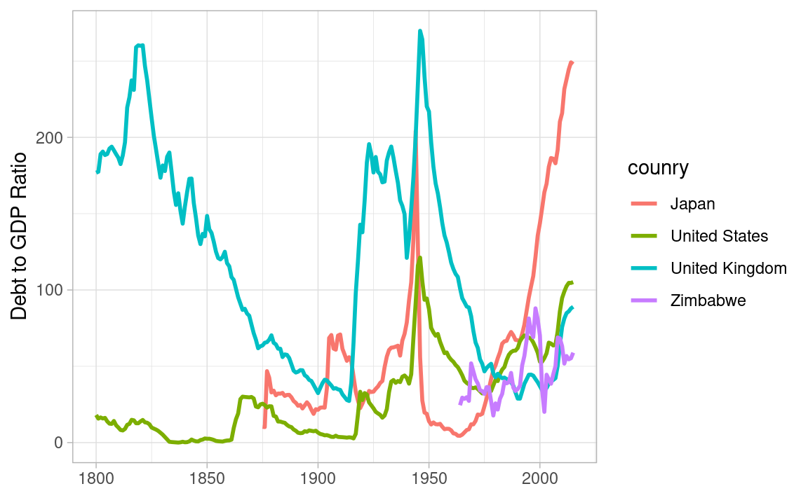

Code
library(tidyverse)
library(imfr)
theme_set(theme_light())Mitsuo Shiota
October 28, 2020
June 15, 2023
I changed code to work under imfr Version 2.
Package ‘imfr’ is the first package which merged my very small pull request. Thank you, creator Christopher Gandrud. I would like to show a usage example below.
Package ‘imfr’ provides some functions to help us explore IMF database. First, I use ‘imf_databases’ function to get database IDs.
There are 323 databases. I get a dataframe with 2 columns, ‘database_id’ and ‘description’.
database_id
1 BOP_2017M06
2 BOP_2020M3
3 BOP_2017M11
4 DOT_2020Q1
5 GFSMAB2016
6 BOP_2019M12
description
1 Balance of Payments (BOP), 2017 M06
2 Balance of Payments (BOP), 2020 M03
3 Balance of Payments (BOP), 2017 M11
4 Direction of Trade Statistics (DOTS), 2020 Q1
5 Government Finance Statistics Yearbook (GFSY 2016), Main Aggregates and Balances
6 Balance of Payments (BOP), 2019 M12I transform ‘description’ into all lower characters, in order to make search easier.
As I am interested in debt issues, I search ‘debt’ in ‘description’. I get ‘database_id’ HPDD, of which ‘description’ is historical public debt.
I use ‘imf_parameters’ function to retrieve the parameters of the database whose id is HPDD.
List of 3
$ freq :'data.frame': 3 obs. of 2 variables:
..$ input_code : chr [1:3] "A" "M" "Q"
..$ description: chr [1:3] "Annual" "Monthly" "Quarterly"
$ ref_area :'data.frame': 199 obs. of 2 variables:
..$ input_code : chr [1:199] "AF" "AL" "DZ" "AO" ...
..$ description: chr [1:199] "Afghanistan" "Albania" "Algeria" "Angola" ...
$ indicator:'data.frame': 1 obs. of 2 variables:
..$ input_code : chr "GGXWDG_GDP"
..$ description: chr "Debt to GDP Ratio"There are 3 lists of code and description:
Now I am ready to download data. I use ‘imf_dataset’ function. I specify HPDD as ‘database_id’, select ‘freq’, ‘ref_area’ and ‘indicator’ from the parameters, and set ‘start_year’ and ‘end_year’.
I change ‘year’ from character to integer, and add ‘country’ by utilizing the 2nd list.
# A tibble: 6 × 5
date value freq ref_area country
<dbl> <dbl> <chr> <chr> <chr>
1 1994 85.2 A AL Albania
2 1995 75.0 A AL Albania
3 1996 76.7 A AL Albania
4 1997 81.9 A AL Albania
5 1998 71.9 A AL Albania
6 1999 63.9 A AL AlbaniaSome countries have data as old as 1800. They are U.K., U.S. and Sweden. Most recent year is 2015.
# A tibble: 3 × 5
date value freq ref_area country
<dbl> <dbl> <chr> <chr> <chr>
1 1800 34.3 A SE Sweden
2 1800 177. A GB United Kingdom
3 1800 18.1 A US United States 191 countries have some data.
I use countrycode.org to get two-letter code of the select countries, and draw a chart.
Debt to GDP ratio rises in the war, and, if you win, it decreases thanks to growth and inflation. If you lose, it decreases thanks to some defaults and very high inflation. Some people in the losing side lose their financial wealth, but most misery does not come from debt, but from physical devastation.
Recently it rises due to secular stagnation, in which monetary policy is constrained by zero lower bound of nominal interest rates, and full employment can be achieved only by bubble or expansionary fiscal policy.

Debt to GDP ratio reflects the government capacity to borrow, the household and the enterprise capacity to save, and the financial sector capacity to mediate. It melts, if nominal GDP growth rates are higher than nominal interest rates.
If Japan falls into deflation, nominal GDP growth rates are negative, and nominal interest rates are zero due to lower bound. This leads to ballooning debt to GDP ratios. Austerity is not the solution, as it leads to deeper deflation and under-employment. Coordinating and rebalancing the monetary and fiscal policies is the solution, which can make inflation expectation positive and well anchored.
---
title: 'My first pull request: imfr'
author: Mitsuo Shiota
date: '2020-10-28'
date-modified: '2023-06-15'
categories:
- economics
- R
knitr:
opts_chunk:
out.width: '70%'
---
I changed code to work under `imfr` Version 2.
## My first pull request
[Package 'imfr'](https://github.com/christophergandrud/imfr) is the first package which merged my very small pull request. Thank you, creator Christopher Gandrud. I would like to show a usage example below.
```{r}
#| label: setup
#| message: false
library(tidyverse)
library(imfr)
theme_set(theme_light())
```
## Look for database ID
Package 'imfr' provides some functions to help us explore IMF database. First, I use 'imf_databases' function to get database IDs.
```{r}
#| label: databases
imf_app_name("mitsuoxv")
databases <- imf_databases()
```
There are `r nrow(databases)` databases. I get a dataframe with 2 columns, 'database_id' and 'description'.
```{r}
#| label: head_databases
head(databases)
```
I transform 'description' into all lower characters, in order to make search easier.
```{r}
#| label: description_to_lower
databases <- databases |>
mutate(description = str_to_lower(description))
```
As I am interested in debt issues, I search 'debt' in 'description'. I get 'database_id' HPDD, of which 'description' is historical public debt.
```{r}
#| label: detect_debt
databases |>
filter(str_detect(description, "debt"))
```
## Retrieve parameters of a database
I use 'imf_parameters' function to retrieve the parameters of the database whose id is HPDD.
```{r}
#| label: params
params <- imf_parameters("HPDD")
str(params)
```
There are 3 lists of code and description:
1. frequency,
1. geographical areas (code: two-letter country codes defined in ISO 3166-1), and
1. indicator. Here, I get only one indicator GGXWDG_GDP, which describes Debt to GDP Ratio.
## Download data
Now I am ready to download data. I use 'imf_dataset' function. I specify HPDD as 'database_id', select 'freq', 'ref_area' and 'indicator' from the parameters, and set 'start_year' and 'end_year'.
```{r}
#| label: download
debt_gdp_ratio <- imf_dataset(
database_id = "HPDD",
freq = "A",
ref_area = params$ref_area$input_code,
indicator = "GGXWDG_GDP",
start_year = 1700, end_year = 2020
)
```
I change 'year' from character to integer, and add 'country' by utilizing the 2nd list.
```{r}
#| label: make_pretty
debt_gdp_ratio <- debt_gdp_ratio |>
as_tibble() |>
mutate(across(date:value, as.numeric)) |>
select(date:ref_area) |>
left_join(params$ref_area, by = c("ref_area"="input_code")) |>
rename(country = description)
head(debt_gdp_ratio)
```
Some countries have data as old as 1800. They are U.K., U.S. and Sweden. Most recent year is 2015.
```{r}
#| label: year_range
range(debt_gdp_ratio$date)
```
```{r}
#| label: countries_1800
debt_gdp_ratio |>
filter(date == 1800)
```
`r unique(debt_gdp_ratio$country) |> length()` countries have some data.
## A chart and some thoughts
I use [countrycode.org](https://countrycode.org/) to get two-letter code of the select countries, and draw a chart.
Debt to GDP ratio rises in the war, and, if you win, it decreases thanks to growth and inflation. If you lose, it decreases thanks to some defaults and very high inflation. Some people in the losing side lose their financial wealth, but most misery does not come from debt, but from physical devastation.
Recently it rises due to secular stagnation, in which monetary policy is constrained by zero lower bound of nominal interest rates, and full employment can be achieved only by bubble or expansionary fiscal policy.
```{r}
#| label: fig-line_chart
#| fig-cap: Debt to GDP Ratio in Japan, the US, the UK and Zimbabwe
#| fig-align: center
debt_gdp_ratio %>%
filter(ref_area %in% c("US", "GB", "JP", "ZW")) %>%
ggplot(aes(date, value, color = fct_reorder2(country, date, value))) +
geom_line(linewidth = 1) +
labs(x = NULL, y = "Debt to GDP Ratio",
color = "counry")
```
Debt to GDP ratio reflects the government capacity to borrow, the household and the enterprise capacity to save, and the financial sector capacity to mediate. It melts, if nominal GDP growth rates are higher than nominal interest rates.
If Japan falls into deflation, nominal GDP growth rates are negative, and nominal interest rates are zero due to lower bound. This leads to ballooning debt to GDP ratios. Austerity is not the solution, as it leads to deeper deflation and under-employment. Coordinating and rebalancing the monetary and fiscal policies is the solution, which can make inflation expectation positive and well anchored.